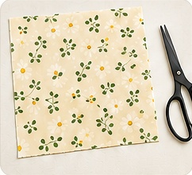
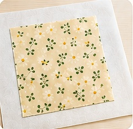
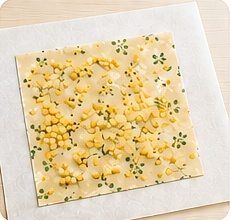
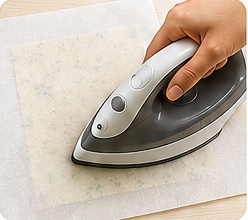
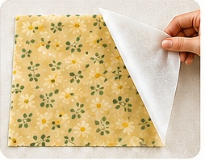
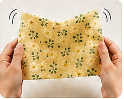
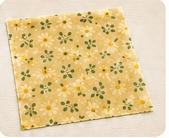

🐝
밀랍랩 만들기
🌿 비즈왁스로 만드는 친환경 랩 🌿
🌿 만드는 방법 🌿

1
천을 원하는 크기로 자릅니다.
천은 깨끗이 세탁한 후 완전히 건조하여 사용해주세요.
천은 깨끗이 세탁한 후 완전히 건조하여 사용해주세요.

2
종이호일을 깔고 그 위에 천을 올립니다.
다리미판 또는 평평한 곳에서 작업해주세요.
다리미판 또는 평평한 곳에서 작업해주세요.

3
비즈왁스를 천 전체에 고르게 뿌립니다.
한곳에 몰리지 않도록 얇게 뿌려주세요.
한곳에 몰리지 않도록 얇게 뿌려주세요.

4
천 위를 종이호일로 덮고 다리미로 다림질합니다.
천 전체를 천천히 눌러 밀랍을 녹여주세요.
천 전체를 천천히 눌러 밀랍을 녹여주세요.

5
밀랍이 천 전체에 스며들면 종이호일을 떼어냅니다.
빈 부분이 있다면 비즈왁스를 조금 더 올려주세요.
빈 부분이 있다면 비즈왁스를 조금 더 올려주세요.

6
밀랍랩을 들어 30초 정도 흔들어 식혀주세요.
금방 굳어 바로 사용할 수 있어요.
금방 굳어 바로 사용할 수 있어요.

7
완전히 식으면 완성!
바로 사용이 가능해요.
바로 사용이 가능해요.
🌿 완성!
자연을 위한 작은 실천,밀랍랩으로 시작해보세요.
♡
💡 밀랍랩 사용 및 관리 Tip